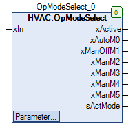
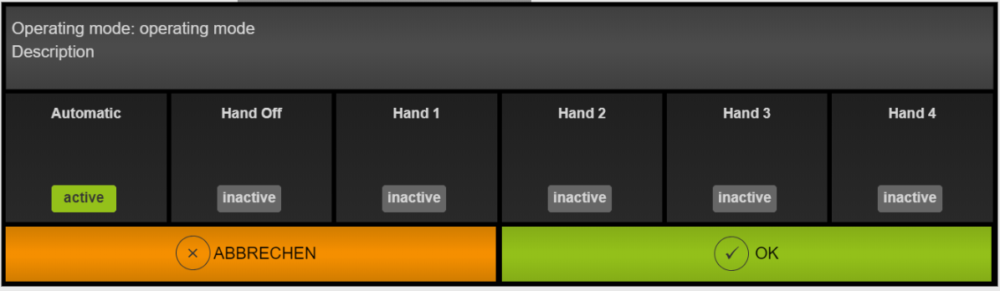

OpModeSelect (FB)¶
FUNCTION_BLOCK OpModeSelect EXTENDS MANASBase IMPLEMENTS IMan
Kurzbeschreibung¶
Anlagenschalter zur Umschaltung von maximal 6 Betriebsarten (Automatik und 5 Handbetriebsarten)
Darstellung¶

Schnittstellen¶
Eingänge¶
Name Datentyp Wertebereich Initialwert Funktion xIn BOOL FALSE Zustandsvariable für xActive im Automatikbetrieb
Ausgänge¶
Name Datentyp Wertebereich Initialwert Funktion xActive BOOL FALSE Ausgangsvariable im Automatikbetrieb xAutoM0 BOOL FALSE Anzeige der Betriebsart Automatik xManOffM1 BOOL FALSE Anzeige der Betriebsart Hand-Aus xManM2 BOOL FALSE Anzeige der Betriebsart Hand 1 xManM3 BOOL FALSE Anzeige der Betriebsart Hand 2 xManM4 BOOL FALSE Anzeige der Betriebsart Hand 3 xManM5 BOOL FALSE Anzeige der Betriebsart Hand 4 sActMode STRING Name der aktuellen Betriebsart (z.B. ‘Automatik’)
Sollwerte / Parameter¶
Name Datentyp Wertebereich Initialwert Funktion tToggleTime TIME 2s Zeitverzögerung bis zum Betriebsartenwechsel eMaxMode eOpMode eOpMode.Mode5 Festlegung der maximalen Anzahl der Hand-Betriebsarten xOpModeToggle BOOL FALSE Umschaltung der Betriebsarten xResAuto BOOL FALSE Rücksetzung in den Automatikbetrieb xEn BOOL TRUE Freigabe sTitle STRING ‘Betriebsmodus ‘ Name des Anlagenschalters sTitle2 STRING ‘Beschreibung ‘ Beschreibung des Anlagenschalters eMode eOpMode eOpMode.Mode0 Aktueller Betriebszustand des Anlagenschalters sTitleM0 STRING ‘Automatik’ Beschreibung der Betriebsart Automatik sTitleM1 STRING ‘Hand Aus’ Beschreibung der Betriebsart Hand-Aus sTitleM2 STRING ‘Hand 1’ Beschreibung der Betriebsart Hand 1 sTitleM3 STRING ‘Hand 2’ Beschreibung der Betriebsart Hand 2 sTitleM4 STRING ‘Hand 3’ Beschreibung der Betriebsart Hand 3 sTitleM5 STRING ‘Hand 4’ Beschreibung der Betriebsart Hand 4
Funktionsbeschreibung¶
Allgemeines¶
Der Anlagenschalter dient zur Umschaltung von eMaxMode +1 unterschiedlichen Betriebsarten (Automatik, Hand-Aus und eMaxMode -1 Hand-Betriebsarten).
Der Umschaltvorgang wird durch eine ansteigende Flanke am Sollwert / Parameter xOpModeToggle ausgelöst.
Die Umschaltung erfolgt endlos, d.h. nach der letzten Handbetriebsart wird mit dem nächsten Umschaltvorgang die Betriebsart Automatik ausgewählt.
Die Betriebsart kann explizit auch durch die Auswahl des Sollwerts / Parameter eMode im Bereich eOpMode.Mode0 - eMaxMode erfolgen.
Die aktuelle Betriebsart wird numerisch durch den Sollwert/Parameter eMode im Bereich eOpMode.Mode0 - eMaxMode dargestellt.
Sie wird zusätzlich durch die entsprechenden Digitalausgänge xAutoM0, xManOffM1, xManM2, xManM3, usw. dargestellt.
Zustandsvariable xIn¶
In xActive Hinweis FALSE FALSE Nur im Automatikbetrieb ( eMode = eOpMode.Mode0 ) gültig TRUE TRUE Nur im Automatikbetrieb ( eMode = eOpMode.Mode0 ) gültig
Ausgangsvariable xActive¶
Im Automatikbetrieb ( eMode = eOpMode.Mode0 ) folgt die Ausgangsvariable xActive der Eingangsvariablen xIn.
In allen übrigen Betriebsarten ist stets der Zustand FALSE aktiv.
Rücksetzung in den Automatikbetrieb¶
Jede ansteigende Flanke am Sollwert/Parameter xResAuto aktiviert den Automatikbetrieb, falls sich der Sollwert/Parameter xEn im Zustand TRUE befindet.
Freigabe/Sperrung der Umschaltung¶
Die Umschaltung der Betriebsart kann nur erfolgen, falls sich der Sollwert/Parameter xEn im Zustand TRUE befindet.
Umschaltverzögerung tToggleTime¶
Die Zeitdauer zwischen der Aktivierung der Betriebsartenumschaltung und der tatsächlichen Umschaltung kann über den Sollwert / Parameter tToggleTime eingestellt werden.
Die Zeitdauer startet nur, falls die Umschaltung der Betriebsarten über den Sollwert/Parameter xOpModeToggle vorgenommen wurde.
Betriebsarten¶
eMode Name der Betriebsart xIn xActive xAutoM0 xManOffM1 xManM2 xManM3 xManM4 xManM5 Hinweis eOpMode.Mode0 sTitleM0 FALSE FALSE TRUE FALSE FALSE FALSE FALSE FALSE Betriebsart Automatik eOpMode.Mode0 sTitleM0 TRUE TRUE TRUE FALSE FALSE FALSE FALSE FALSE Betriebsart Automatik eOpMode.Mode1 sTitleM1 X FALSE FALSE TRUE FALSE FALSE FALSE FALSE Betriebsart Hand-Aus eOpMode.Mode2 sTitleM2 X FALSE FALSE FALSE TRUE FALSE FALSE FALSE Betriebsart Hand 1 eOpMode.Mode3 sTitleM3 X FALSE FALSE FALSE FALSE TRUE FALSE FALSE Betriebsart Hand 2 eOpMode.Mode4 sTitleM4 X FALSE FALSE FALSE FALSE FALSE TRUE FALSE Betriebsart Hand 3 eOpMode.Mode5 sTitleM5 X FALSE FALSE FALSE FALSE FALSE FALSE TRUE Betriebsart Hand 4
Legende: X = Unbestimmt
Visualisierung¶
Passendes Visualisierungselement aus der HVACV Visu Library: OpModeSelect OpModeSelect_Button
Darstellung¶

Schnittstellen Visu-Element OpModeSelect_Button¶
Name Datentyp Typ Initialwert Funktion FB_OpModeSelect_0 HVAC.OpModeSelect VAR_IN_OUT Hier FB Instanz OpModeSelect eintragen Bsp. PRG.OpModeSelect
Es reicht das Visualisierungselement OpModeSelect_Button zu platzieren. Ein Klick darauf öffnet in der Visualisierung den Dialog OpModeSelect. Die Anzahl der Betriebsmodi werden im FB HVAC.OpModeSelect festgelegt (eMaxMode) sowie die Titel (sTitelM0 bis M5) und der Dialogtitel (sTitle und sTitle2). Das Visualisierungselement passt sich automatisch der Größe der maximales Betriebsmodi an. | | Hinweis: VAR_IN_OUT Schnittstellen müssen belegt werden, VAR_INPUT sind optional. | |
Codesys¶
- InOut:
Scope Name Type Initial Comment Input xIn BOOL 0 Zustandsvariable für xActive im Automatikbetrieb tToggleTime TIME TIME#2s0ms Zeitverzögerung bis zum Betriebsartenwechsel eMaxMode eOpMode eOpMode.Mode5 Festlegung der maximalen Anzahl der Hand-Betriebsarten xOpModeToggle BOOL FALSE Umschaltung der Betriebsarten xResAuto BOOL FALSE Rücksetzung in den Automatikbetrieb xEn BOOL TRUE Freigabe sTitle STRING ‘operating mode’ Name des Anlagenschalters sTitle2 STRING ‘Description’ Beschreibung des Anlagenschalters eMode eOpMode eOpMode.Mode0 Aktueller Betriebszustand des Anlagenschalters sTitleM0 STRING ‘Automatic’ Beschreibung der Betriebsart Automatik sTitleM1 STRING ‘Hand Off’ Beschreibung der Betriebsart Hand-Aus sTitleM2 STRING ‘Hand 1’ Beschreibung der Betriebsart Hand 1 sTitleM3 STRING ‘Hand 2’ Beschreibung der Betriebsart Hand 2 sTitleM4 STRING ‘Hand 3’ Beschreibung der Betriebsart Hand 3 sTitleM5 STRING ‘Hand 4’ Beschreibung der Betriebsart Hand 4 Output xActive BOOL Ausgangsvariable im Automatikbetrieb xAutoM0 BOOL Anzeige der Betriebsart Automatik xManOffM1 BOOL Anzeige der Betriebsart Hand-Aus xManM2 BOOL Anzeige der Betriebsart Hand 1 xManM3 BOOL Anzeige der Betriebsart Hand 2 xManM4 BOOL Anzeige der Betriebsart Hand 3 xManM5 BOOL Anzeige der Betriebsart Hand 4 sActMode STRING Name der aktuellen Betriebsart (z.B. ‘Automatik’)